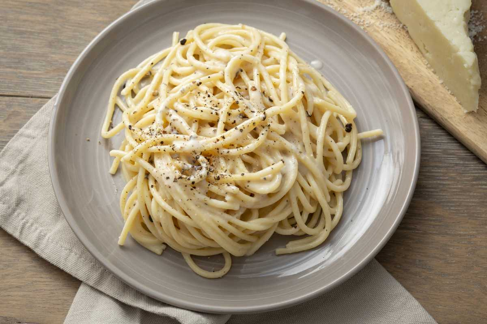

Home
Spaghetti Cacio e Pepe

Description
This is a recipe that we have made in our family for many years--everyone loves it. It's a very basic and easy variation on mac 'n cheese.
Ingredients
-
1 pound spaghetti
-
6 tablespoons olive oil
-
2 cloves garlic, minced
-
2 teaspoons ground black pepper
-
1 ¾ cups grated Pecorino Romano cheese
Steps to prepare
Part 1
-
Bring a large pot of lightly salted water to a boil
-
Cook spaghetti in the boiling water, stirring occasionally until tender yet firm to the bite, about 10 minutes
-
Scoop out some of the cooking water and reserve
-
Drain spaghetti
Part 2
-
Heat oil in a large skillet over medium heat
-
Add garlic and pepper; cook and stir until fragrant, 1 to 2 minutes
-
Add spaghetti and Pecorino Romano cheese
-
Ladle in 1/2 cup of reserved cooking water; stir until cheese is melted, about 1 minute
-
Add more cooking water until sauce coats spaghetti, about 1 minute more